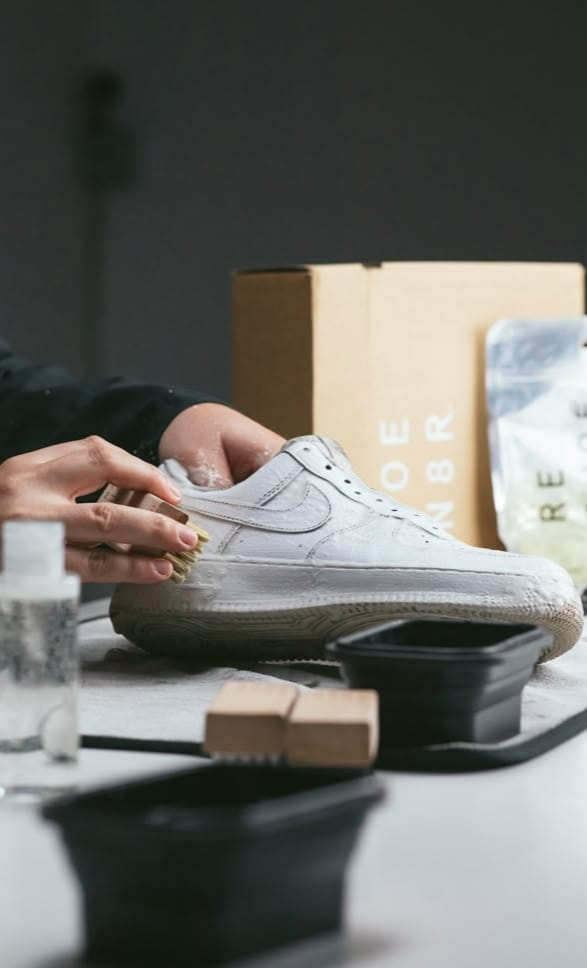

Regular Cleaning
Layanan Regular Cleaning adalah pilihan tepat untuk perawatan rutin sepatu Anda...
Layanan Regular Cleaning Meliputi:
- Pembersihan bagian atas (upper), midsole, outsole, dan tali sepatu
- Proses cepat dan aman untuk penggunaan harian
- Cocok untuk sneakers, sepatu casual, hingga sepatu olahraga
- Menggunakan produk pembersih yang tidak merusak bahan
- Estimasi pengerjaan ±1 hari
Rawat sepatu Anda secara rutin...
